還帶了一點 Heroku 跟 ngrok 的介紹。
2021 升大四那場黑客松的因緣際會之下，讓我接觸到了這一塊，挺有趣的！
前置作業
LINE Developers
登入 LINE Developers
還沒註冊的話，先註冊吧！
Create a new provider
使用者看得到 provider 的名稱哦～
Create a new channel
選 Messaging API
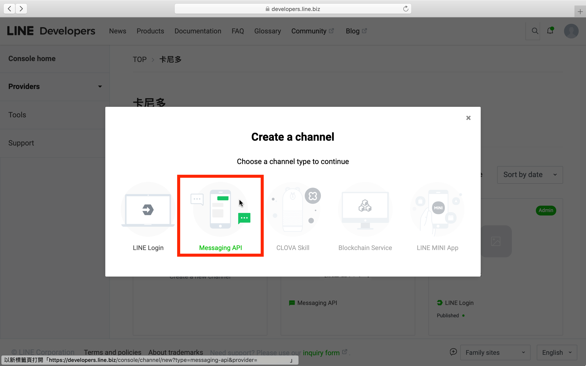
填一填 Channel name、Channel description、Category、Subcategory → 勾一勾 → Create
（注意：The channel name can’t be changed for seven days.）
更改設定
進到 LINE Official Account Manager → 選本次 project 的帳號 → 照下面那張圖更改設定
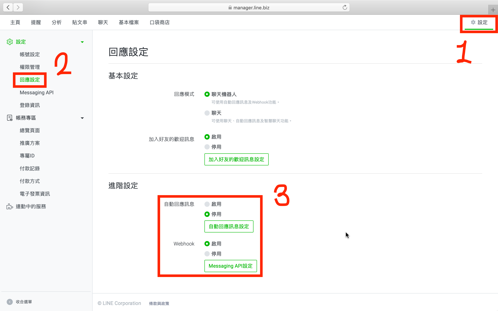
進到自己的 channel → Messaging API → Webhook settings 下面的 Use webhook 也別忘了打開
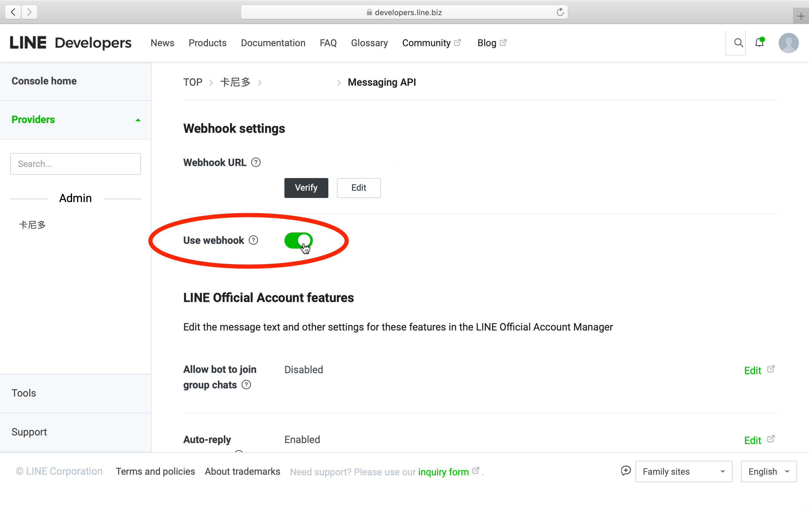
這樣等等在測試的時候，就不會沒反應囉！
Heroku
為何需要 Heroku？因為 Messaging API 需要綁定 Webhook URL，讓我們的 server 能從 LINE Platform 接收到 webhook events 並加以處理。
還是不清楚什麼是 webhook events？Messenger Platform 的解釋我蠻喜歡的：
Webhook events are how the XXX Platform notifies your bot when a variety of interactions or events happen, including when a person sends a message. Webhook events are sent by the XXX Platform as POST requests to your webhook.
如果 server 只在 local 端運行，沒有個 public 的 endpoint，LINE Platform 怎能傳送 webhook events 給我們的 server？所以我們需要透過把 code 部署到 Heroku，Heroku 會為我們部署上去的 server 生出一個 public 的 endpoint，把這個 endpoint (或是說 URL) 貼到 Webhook settings → Webhook URL 就行囉！
（別忘了 Webhook URL 下面的 Use webhook 也要打開哦）
後來發現前期用 ngrok 測試比較有效率也比較優雅，不然每次要測試，還要等待 Heroku 的部署 ＆ commit message 都會亂寫 (畢竟不確定 code 是否會有 bug)
ngrok 是什麼？怎麼用？後面會介紹！
登入 Heroku
還沒註冊的話，先註冊吧！
Create New App
New → Create new app
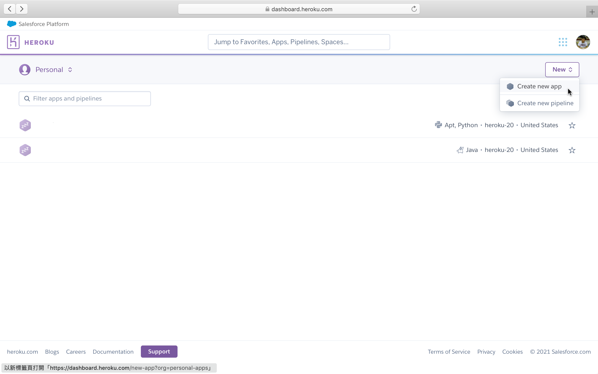
輸入 App name → 出現綠色的 <app-name> is available 提示訊息代表沒跟其他 Heroku App 撞名 → 地區目前只有美國、歐洲可以選，我選美國 → Create app
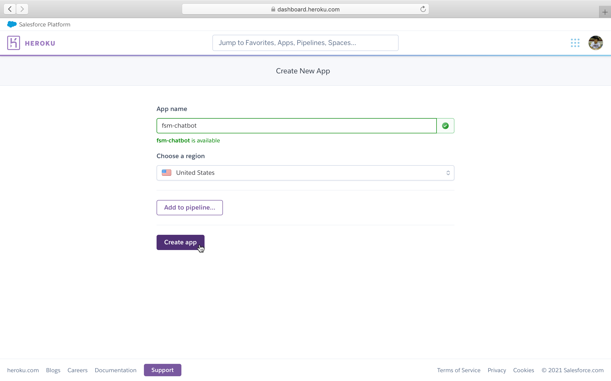
登入 Heroku CLI
如果還沒安裝 Heroku CLI，可以到這邊照著指示裝～
安裝完以後，輸入下面的指令：
1 | heroku login |
跳轉到瀏覽器，按下 Log In 後就行囉！
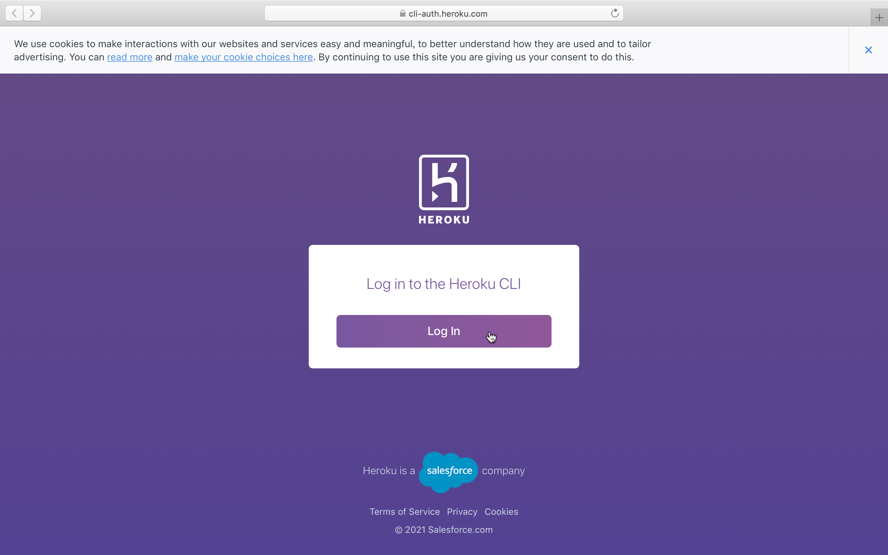
Create a new Git repo
1 | mkdir <project-name> |
<project-name> 可以跟 <app-name> 一樣哦～
（我個人認為一樣的話會比較好，沒有為什麼，就感覺比較好）
ngrok
透過 ngrok，不必部署就能在 local 端測試了！
這一篇應該能幫助你了解 ngrok 是什麼。
（看「ngrok 服務簡介」這個部分就行了，然後其實沒註冊 ngrok 也能用）
安裝 ngrok
1 | brew cask install ngrok # for Homebrew v2.6.x and below |
安裝完後，在終端機輸入 ngrok 有出現東西就代表成功了！
正式開發！
用 Pipenv 管理專案套件
沒裝過的話，跟著這篇文裝吧！
建 Python 虛擬環境
Create a new project using Python 3.9（其他版本的也行）
1 | pipenv --python 3.9 |
如此一來，專案多了個 Pipfile。
是不是長得很像 npm 的 package.json 呢？其實功能也差不多哦！
想徹底了解那是什麼的話就 google 吧！
裝套件
用 Pipenv 裝個套件試試
1 | pipenv install line-bot-sdk # LINE Messaging API |
除了 Pipfile 的 [packages] 底下多了個 line-bot-sdk = "*" 之外，還多生成了一個 Pipfile.lock。
我是把它理解成 npm 的 node_modules 資料夾啦！
裝其他 dependency
把其他需要的套件也裝一裝：
1 | pipenv install flask # 處理 webhook |
不過，很可能還是會噴出錯誤訊息，這就必須靠 google 解決了⋯⋯
如果還有其它套件要安裝，就一律把 pip install xxx 改成 pipenv install xxx 就可以囉！
（話說在安裝前已經 pipenv shell 進到虛擬環境的話，記得先 exit 離開虛擬環境以後再安裝，不然 Pipfile 可能不會更新到。我測試的時候是這樣啦，不知道有沒有錯🤔）
進虛擬環境
如何進到有裝那些套件的環境呢？
1 | pipenv shell # 進去 |
進到虛擬環境以後，輸入 pip list 終端機就會列出你在這個環境中裝了哪些套件～
簡單試 LINE Bot
寫個「你傳什麼文字它就回什麼文字」的 Bot。
將機密存成環境變數
打開 LINE Developers，進到你的 channel
Basic settings 滑到底，有個 Channel secret，第四步會需要
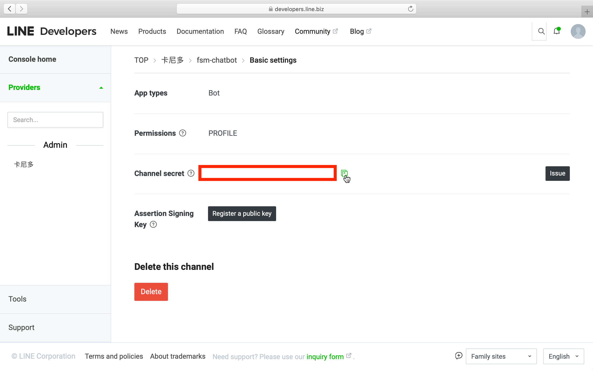
Messaging API 滑到底，issue 一個 channel access token，一樣第四步會需要
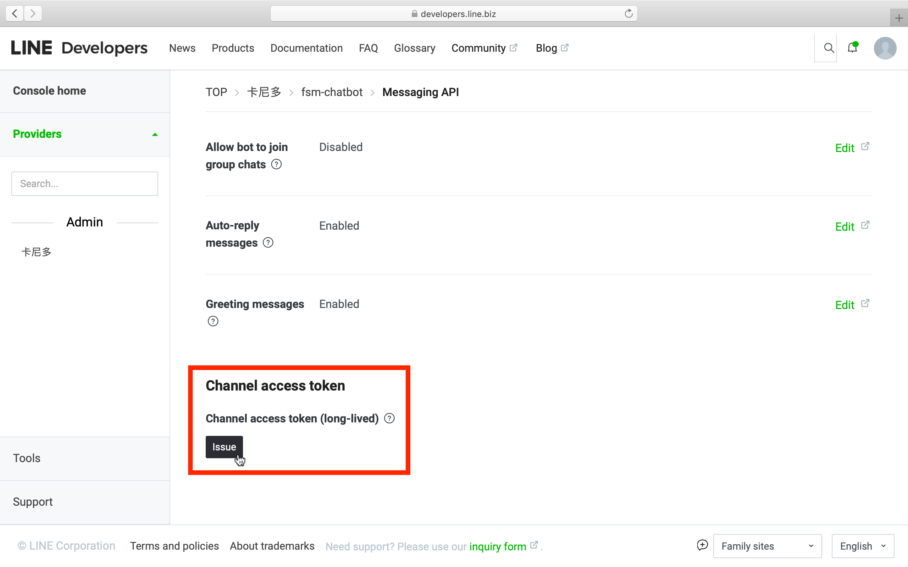
新增
.env：
1 | LINE_CHANNEL_SECRET=<channel-secret> |
程式主體
參考官方的 line-bot-sdk-python，新增 src/app.py：
1 | import os |
提個外話：為何要把 app.py 放進資料夾 src 裡面？因為當你的 project 越長越大，檔案也會跟著越來越多，這麼做的話可以讓程式看起來有條不紊！
ngrok 免部署測試
（這時候如果用 Heroku 測會失敗，因為我們還沒在 Heroku 上面裝偏底層的套件，待會就會知道什麼意思了）
運行 Flask server
1
python src/app.py
我這邊出現了
1
Running on http://192.168.0.101:8000/
後面的
8000是 port number，待會會需要。終端機開啟新分頁，輸入
ngrok http 8000，最後面的8000是剛剛的 port number，會輸出：1
2
3
4
5
6
7
8
9
10
11
12ngrok by @inconshreveable (Ctrl+C to quit)
Session Status online
Session Expires 1 hour, 59 minutes
Version 2.3.40
Region United States (us)
Web Interface http://127.0.0.1:4040
Forwarding http://f47ec0b1e3d6.ngrok.io -> http://localhost:8000
Forwarding https://f47ec0b1e3d6.ngrok.io -> http://localhost:8000
Connections ttl opn rt1 rt5 p50 p90
0 0 0.00 0.00 0.00 0.00第二個 Forwarding 的網址
https://f47ec0b1e3d6.ngrok.io待會會需要。
（注意：每次網址都不一樣，所以如果關掉重開，LINE 那邊的 Webhook URL 也要跟著改哦）把剛剛的網址貼進 Webhook URL，別忘了後面還要加上
/webhook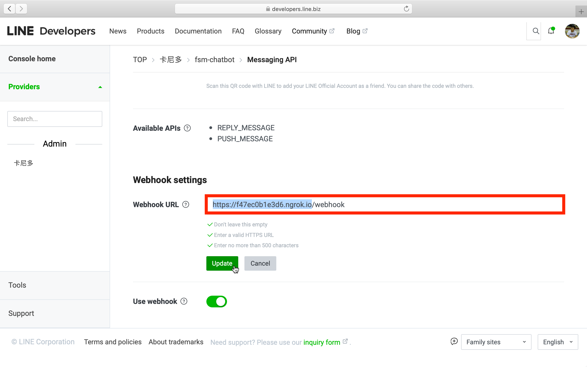
Update → Verify → 出現 Success 就代表成功囉！
用 LINE 測試一下
手機掃 channel 裡面的 QR code，加入好友就能測試囉～
試試看，當你隨便輸入一段訊息，Bot 是不是就會回跟你一樣的訊息呢？酷吧！
（更酷的在後頭呢。不過我後面不會分享得太細，主要是 share 我在網路上找到的實用資源給大家）
用 FSM 的概念擴增功能
因為我很喜歡 NBA，所以找到了 daily-nba 這個 repo，也就因此間接學到了用 FSM 做 Bot 的技巧！
我的作法就是仔細研究它每個部分的 code 分別是用來做什麼的，過程中還蠻愉快的，畢竟是自己感興趣的內容（所以說，如果想學某塊技術，找個自己感興趣的 repo 來邊研究邊學吧！）
如果覺得上面那個 repo 有點複雜，可以參考 TOC-Project-2020 這一個 repo。
（畢竟有很多是 author 自己額外加的功能，跟 FSM 的核心架構沒什麼關係）
（後來才發現原來這是成大資工某門課的 homework project，酷斃了！）
程式架構
以 daily-nba 為例，還是簡單說明一下好了。
1 | . |
Aptfile
告訴 Heroku 要在我們部署上去的 server 上裝哪些偏底層的套件。
在開始前，先裝 heroku-buildpack-apt 這個 Buildpack 吧：
1 | heroku buildpacks:add --index 1 heroku-community/apt |
接著，新增一個 Aptfile：
1 | graphviz |
待會部署的時候，Heroku 就會幫我們裝這些套件囉！
Procfile
官方文檔上有清楚的解釋。
以 web: python src/app.py 為例，它的意思是：幫我用 python src/app.py 這個指令開啟 web 這個 type 的 process，也就是像 local 端的開啟 server 啦！
用 Heroku 測試
（當然用 ngrok 測也行）
如果你 .gitignore 有 .env 的話，Heroku 上面的 server 會讀不到環境變數。
所以在部署前，我們可以先在 Heroku 上面手動添加那些環境變數：
Settings → Reveal Config Vars
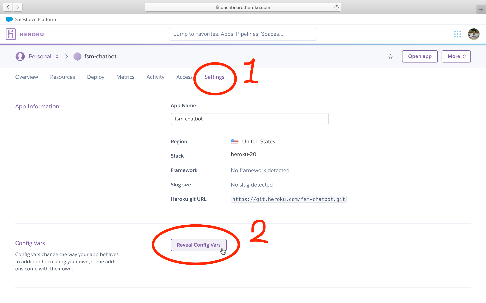
照著 .env，把環境變數給填上。
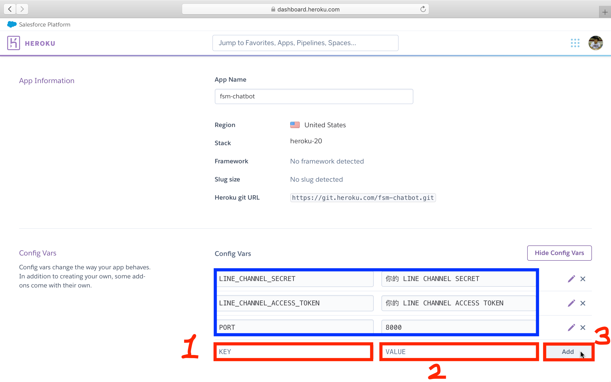
環境變數加上去以後，來部署吧！
1 | git add . |
跑的過程中，會看到 Heroku 在幫我們裝各種套件呢xD
部署完後，別忘了把 Webhook URL 改成 https://<app-name>.herokuapp.com/webhook！
再用 LINE 測試 😎
今天的分享就到這邊，我們下篇文見吧 😃